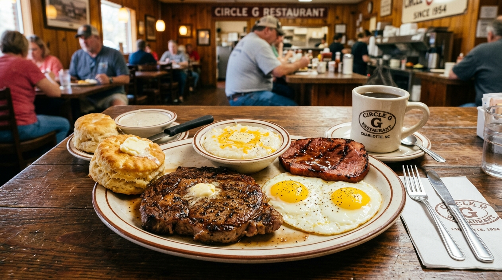

Daily Meat & Three
Choose your hearty entree paired with three scratch sides—collards, mac & cheese, candied yams, black-eyed peas, or green beans.
Discover Steam Table →Charlotte's beloved Southern diner and cafeteria sanctuary at 2200 Beatties Ford Rd. Serving golden crispy fried chicken, tender country style steak smothered in rich onion gravy, four-cheese baked mac, slow-simmered collard greens, sweet potato souffle, and warm cornbread daily.

Scratch Southern cooking, generous portions, & down-home hospitality.
Choose your hearty entree paired with three scratch sides—collards, mac & cheese, candied yams, black-eyed peas, or green beans.
Discover Steam Table →Starting at 6:00 AM daily with fluffy buttermilk biscuits filled with country ham, sausage, crispy bacon, eggs, and rich sausage gravy.
Discover Breakfast →2200 Beatties Ford Rd. Open Mon–Fri 6am–5pm and Sat 6am–3pm. Cash-preferred diner with on-site ATM.
View Hours & Location →